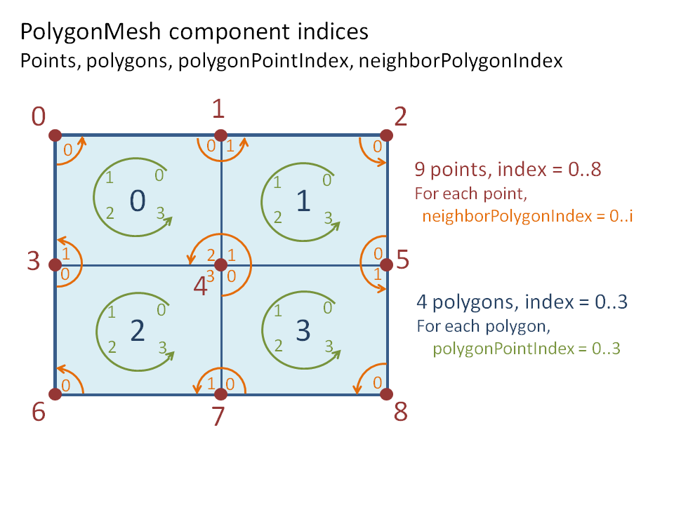
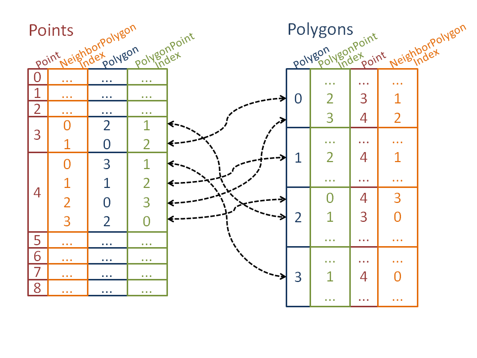
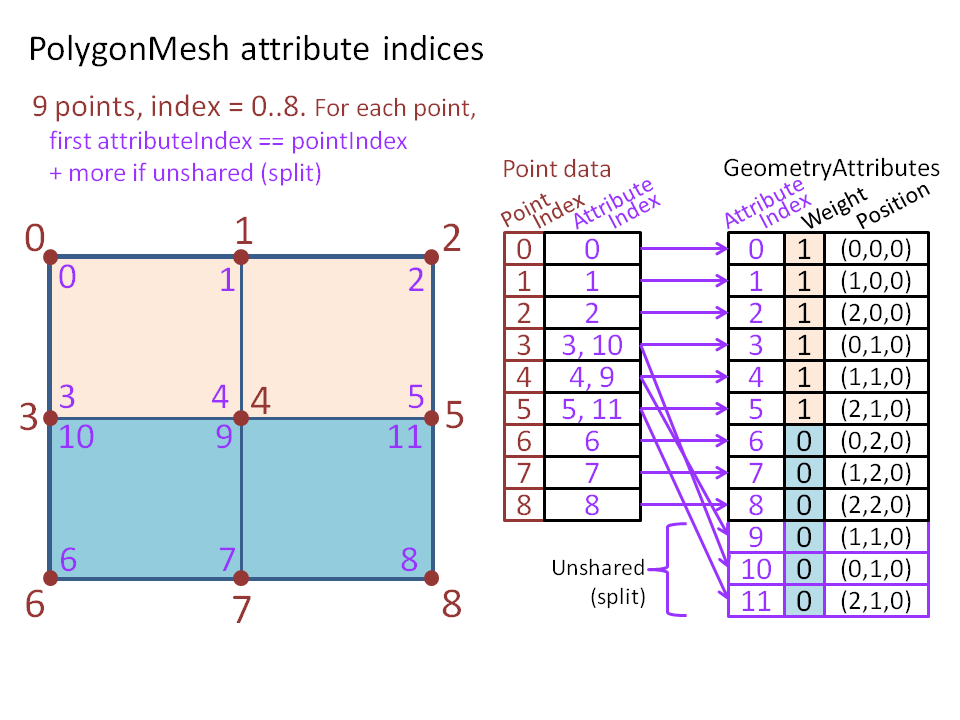
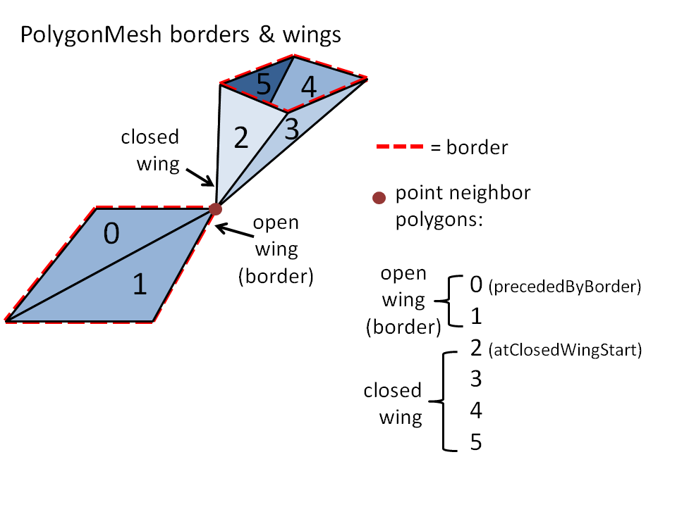
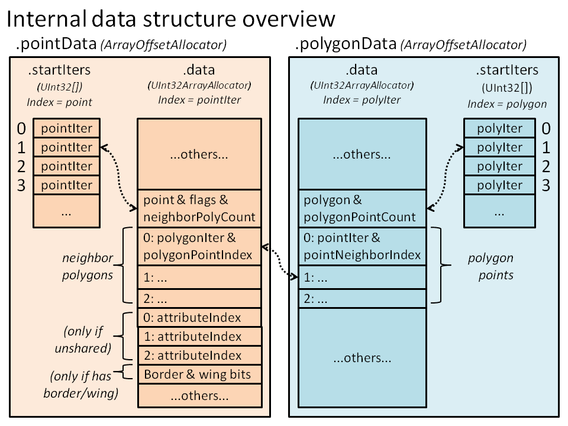

PolygonMesh’s structure¶
Introduction¶
The PolygonMesh represents a geometric surface made of polygons, where each polygon is defined by closed loop of 3 or more 3D points. A point can be connected to multiple polygons. Although the basic definition of a PolygonMesh is pretty standard, the PolygonMesh structure contains special characteristics that allows it to balance performance with memory consumption:
- the structure identifies points and polygons with indices, but not edges or polygonPoints (face-vertex). See PolygonMesh for more details.
- The GeometryAttribute elements are all aligned for a direct mapping to hardware drawing APIs such as OpenGL. See PolygonMesh Attributes for more details.
- When modifying the mesh structure, some particular rules apply. See Modifying the mesh structure for more details.
- the PolygonMesh structure tries to reduce memory consumption and fragmentation by grouping most of its topological data into a few contiguous arrays, which can improve speed, particularly for larger meshes. See Internal data organization for more details.
Because the PolygonMesh makes heavy usage of arrays, `unguarded` KL compilation typically provides a 30% speedup for most PolygonMesh methods.
注釈
Unless stated otherwise, functions that read the mesh are threadsafe only if the mesh structure or attribute sharing layout is not modified. Functions that modify the mesh or the attribute sharing layout are not threadsafe.
PolygonMeshTopology¶
The PolygonMeshTopology encapsulates the topological information for a PolygonMesh. It is mainly composed of two symmetric structures, one storing point data and the other storing polygon data. Each point is associated to an index, and has a compact array storing references to the neighbor polygons’ corners (polygonPoints). Similarly, each polygon is associated to an index, and has a compact array storing references to the connected points.
The following figures illustrate the concepts of points and polygons and their local indices (neighborPolygonIndex, neighborPointIndex):
The following table shows a simplified view of the storage and relationship between these components:
This example uses the PolygonMesh.getDesc function to report the structure corresponding to the illustrated mesh above.
/*
** Example: Structure dump of a 2X2 grid:
*/
require Geometry;
operator entry() {
//Add a 2X2 grid if size 2.0
PolygonMesh p();
p.addPlane(Xfo(), 2.0, 2.0, 2, 2);
report( p.getDesc(false) );
}
/*
** Output:
Mesh: pointCount: 9 polygonCount: 4 nbAttributeVectors: 9
Points (adjacent polygons as 'polygon.neighborPolygonIndex',
borders as '|', closed wing starts as '<<'):
0: 1 polygons: |0.1
1: 2 polygons: |0.0, 1.1
2: 1 polygons: |1.0
3: 2 polygons: |2.1, 0.2
4: 4 polygons: <<3.1, 1.2, 0.3, 2.0
5: 2 polygons: |1.3, 3.0
6: 1 polygons: |2.2
7: 2 polygons: |3.2, 2.3
8: 1 polygons: |3.3
Polygons (connected points as 'point.polygonPointIndex', borders as '|'):
0: 4 points: 1.0 |, 0.0 |, 3.1, 4.2
1: 4 points: 2.0 |, 1.1, 4.1, 5.0 |
2: 4 points: 4.3, 3.0 |, 6.0 |, 7.1
3: 4 points: 5.1, 4.0, 7.0 |, 8.0 |
*/
More details about the various component types and indices:
- point: represented by an index, a point can be connected to a varying number of polygons (or none). A polygon mesh point is the same as a vertex. PolygonMesh methods that get or set point specific data usually begin with .getPoint or .setPoint, respectively.
- polygon: represented by an index, a polygon is defined as an ordered list of 3 or more points. PolygonMesh methods that get or set polygon specific data usually begin with .getPolygon or .setPolygon, respectively.
neighborPolygon: a point-polygon pair, which corresponds to one of the polygons around a point. The neighborPolygon is represented by a pair of indices formed by the point index and the neighborPolygonIndex. The neighborPolygonIndex is a per point local index that ranges from 0 to PolygonMesh.getPointPolygonCount ()-1, where each index corresponds to a polygon connected to that point. The neighborPolygon and the polygonPoint (described below) represent the same location, however they are point-relative or polygon-relative, respectively.
polygonPoint: a polygon-point pair, which corresponds to the polygon corner connecting a point (sometimes called a face-vertex or polygonNode in other software). The polygonPoint is represented by a pair of indices formed by the polygon index and the polygonPointIndex. The polygonPointIndex is a per polygon local index that ranges from 0 to PolygonMesh.getPolygonSize ()-1, where each index corresponds to a point connected to that polygon. The neighborPolygon and the polygonPoint (described below) represent the same location, however they are point-relative or polygon-relative, respectively.
PolygonMeshEdge: As opposed to most mesh structures, polygon edges are not first-class components, but are rather represented by a structure defined by a pair of polygon index and point index.
注釈
The PolygonMesh (object) structure does not associate edges and polygonPoints (face-vertex) to explicit indices, which allows the structure to be more compact by avoiding some redundancy. In general, this should not be an issue since edge indices are usually not transfered from/to other mesh representations such as DCC’s. Avoiding to store edge and polygonPoint tables allows the mesh structure to be at least 50% smaller than an equivalent half-edge data structure, and is faster for most operations because of memory locality.
See Internal data organization for more details about how the polygon mesh structural data is organized.
Bounds checking¶
The PolygonMesh internal structure stores multiple small arrays in a single memory buffer. Because of this, most functions will explicitly do, in KL guarded mode, a check to validate if indices respect the bounds (using the Fabric_Guarded special KL condition). For example:
- A function that takes a point and a neighborPolygonIndex will ensure that the latter is within the [0 .. PolygonMesh.getPointPolygonCount -1] range
- A function that takes a polygon and a polygonPointIndex will ensure that the latter is within the [0 .. PolygonMesh.getPolygonSize -1] range
Because of these explicit bound checks, and because the PolygonMesh (object) makes heavy usage of arrays, unguarded compilation typically provides a 30% speedup for most PolygonMesh methods.
PolygonMesh Attributes¶
Like other Geometry types, the PolygonMesh stores its attributes in a GeometryAttributes container. This implies that all GeometryAttribute values are index-aligned and have the same size, which allow the attribute value arrays to be mapped directly to hardware drawing buffers such as OpenGL’s. However, maintaining a global value alignment while supporting value sharing around points requires additional attribute management for the PolygonMesh, and this has some impact on the API.
In the PolygonMesh API, an attributeIndex is relative to the GeometryAttribute value arrays (total of GeometryAttributes.size elements). The correspondence between a attributeIndex and a point index is non-trivial, as it depends on the sharing (splitting) layout of attribute values around points. If there is an attribute split around a point (even for just one of many attributes), then each polygonPoint value combinations point will be stored at a different attributeIndex. It is guaranteed, however, that an attributeIndex within the [0 .. PolygonMesh.pointCount () - 1] range is owned by the point of the same same index.
The following figure shows how split attribute values cause additional attributeIndex to be allocated:
Notice that even the point position values are duplicated in order to ensure global attribute alignment.
The following example dumps the structure of that same mesh, along with attribute values. The attributeIndex is only printed for points that have unshared attribute values (splits):
/*
** Example: dump of the structure of a 2X2 grid:
*/
require Geometry;
operator entry() {
//Add a 2X2 grid if size 2.0
PolygonMesh p();
p.addPlane(Xfo(), 2.0, 2.0, 2, 2);
//Set the weights of polygons 0 and 1 to 1.0, and
//the weiths of polygons 2 and 3 to 0.0.
Ref<ScalarAttribute> weights = p.getOrCreateScalarAttribute('weights');
for( UInt32 polygon = 0; polygon < 4; ++polygon ) {
for( UInt32 polygonPointIndex = 0; polygonPointIndex < 4; ++polygonPointIndex )
p.setPolygonAttribute( polygon, polygonPointIndex, weights, polygon < 2 ? 1.0 : 0.0 );
}
report( p.getDesc(true) );
}
/*
** Output:
Mesh: pointCount: 9 polygonCount: 4 nbAttributeVectors: 12
Points (adjacent polygons as 'polygon.neighborPolygonIndex',
borders as '|', closed wing starts as '<<',
unshared attribute as value@attributeIndex ):
0: 1 polygons: |0.1
Attr positions:{x:-1.0,y:+0.0,z:-1.0}
Attr weights:+1.0
1: 2 polygons: |0.0, 1.1
Attr positions:{x:+0.0,y:+0.0,z:-1.0}
Attr weights:+1.0
2: 1 polygons: |1.0
Attr positions:{x:+1.0,y:+0.0,z:-1.0}
Attr weights:+1.0
3: 2 polygons: |2.1, 0.2
Attr positions:{x:-1.0,y:+0.0,z:+0.0}
Attr weights:+0.0@10 +1.0@3
4: 4 polygons: <<3.1, 1.2, 0.3, 2.0
Attr positions:{x:+0.0,y:+0.0,z:+0.0}
Attr weights:+0.0@9 +1.0@4 +1.0@4 +0.0@9
5: 2 polygons: |1.3, 3.0
Attr positions:{x:+1.0,y:+0.0,z:+0.0}
Attr weights:+1.0@5 +0.0@11
6: 1 polygons: |2.2
Attr positions:{x:-1.0,y:+0.0,z:+1.0}
Attr weights:+0.0
7: 2 polygons: |3.2, 2.3
Attr positions:{x:+0.0,y:+0.0,z:+1.0}
Attr weights:+0.0
8: 1 polygons: |3.3
Attr positions:{x:+1.0,y:+0.0,z:+1.0}
Attr weights:+0.0
Polygons (connected points as 'point.polygonPointIndex', borders as '|'):
0: 4 points: 1.0 |, 0.0 |, 3.1, 4.2
1: 4 points: 2.0 |, 1.1, 4.1, 5.0 |
2: 4 points: 4.3, 3.0 |, 6.0 |, 7.1
3: 4 points: 5.1, 4.0, 7.0 |, 8.0 |
*/
The following methods allow to set explicit attribute values:
Point-shared values (uniform values): PolygonMesh.setPointAttribute (Size point, io GeometryAttribute attribute, Value value): these methods will ensure that all values are properly set in case other attributes are unshared around the same point. The PolygonMesh.setPointPosition and PolygonMesh.setPointNormal specialized methods are similar. These methods don’t change the attribute sharing layout (attributeIndex), and are thread-safe if the attribute sharing layout doesn’t change.
注釈
These methods were defined only for a specific set of GeometryAttribute types (for example Vec3Attribute). For other types, including custom attribute types, simply extend the functionality by defining a similar function in your code.
Values that might be unshared around points:
- Per point neighbor: PolygonMesh.setPointAttribute (Size point, Size neighborPolygonIndex, io GeometryAttribute attribute, Value value)
- Per polygon point: PolygonMesh.setPolygonAttribute (Size polygon, Size polygonPointIndex, io GeometryAttribute attribute, Value value)
These methods will set the value to a specific neighbor polygon (polygon point). They will check if the point sharing can be maintained by comparing with the previously set values, and will allocate a new attributeIndex if this is not possible. These methods are not thread-safe if they change the attribute sharing layout (attributeIndex).
注釈
These methods were defined only for a specific set of GeometryAttribute types (for example Vec3Attribute). For other types, including custom attribute types, simply extend the functionality by defining a similar function in your code.
注釈
In order to properly manage value sharing, the PolygonMesh internally maintains a Boolean initialized state per attribute value, so it can distinguish between explicitly set values and default values.
The PolygonMesh.resetAttributeAndAvoidSharingChanges method can avoid unrequired splitting and unsplitting of attribute values by trying to maintain existing attribute sharing layout (attributeIndex)
The attributeIndex can be retrieved using either the PolygonMesh.getPointAttributeIndex or the PolygonMesh.getPolygonAttributeIndex method.
The PolygonMesh.arePointAttributesUniform and the PolygonMesh.isPointAttributeUniform will tell if values for all or a specific attribute are shared for a point, respectively.
Since the mesh maintains the attributes values aligned for being draw-API friendly (OpenGL), the triangles draw list directly correspond to triplets of attributeIndex. The PolygonMesh.generateAttributesTriangleList method returns that list.
Borders and wings¶
While most points are usually connected to polygons forming a regular surface (manifold), some have special topological features such as borders and wings. If not treated with care, these rare features can be the source of issues when walking on the mesh structure.
A border is an edge which is adjacent to a single polygon.
A wing is a set of polygons that are connected to a same point, and form an adjacent group relatively to that point. In other words, a wing is a suite of polygons that can be traversed by walking on non-border edges around a given point.
- An open wing is a wing delimited by 2 borders. An open wing can contain one or more polygons.
- A closed wing is formed by a loop of polygons, where all edges of the wing are not border edges. A closed wing can
contain two or more polygons.
When point polygons are ordered (see Modifying the mesh structure for point polygon ordering), it is guaranteed that the polygons part of a same wing have consecutive polygonNeighborIndex for a given point.
The following illustrates the concept of wings and borders:
This example gathers wing and border information for point 0 using various methods. The mesh corresponds to the previous illustration:
/*
** Example: Getting border and wing information
*/
require Geometry;
operator entry() {
//Create the 2 wings structure around point 0
PolygonMesh p();
p.beginStructureChanges();
p.createPoints(8);
//Open wing: polygons 0 and 1
p.addPolygon(0,3,2);
p.addPolygon(0,2,1);
//Closed wing: polygons 2..5
p.addPolygon(0,5,6);
p.addPolygon(0,6,7);
p.addPolygon(0,7,4);
p.addPolygon(0,4,5);
p.endStructureChanges();
//Get border information around point 0
Size pointPolygonCount = p.getPointPolygonCount(0);
for( Size i = 0; i < pointPolygonCount; ++i ) {
Boolean precededByBorder, atClosedWingStart;
p.getPointBorderInfo( 0, i, precededByBorder, atClosedWingStart );
report( "Point 0, neighbor " + i + ": polygon=" + p.getPointPolygon(0, i)
+ " precededByBorder=" + precededByBorder + " atClosedWingStart=" + atClosedWingStart);
UInt32 prevPolygonPointIndex = p.getPointPrevNeighborPolygonIndexInWing(0, i);
UInt32 nextPolygonPointIndex = p.getPointNextNeighborPolygonIndexInWing(0, i);
report( " Prev polygon: " + (prevPolygonPointIndex == InvalidIndex ? "(none)" : String(p.getPointPolygon(0, prevPolygonPointIndex) ) )
+ ", next polygon: " + (nextPolygonPointIndex == InvalidIndex ? "(none)" : String(p.getPointPolygon(0, nextPolygonPointIndex) ) ) );
Size wingPolygonPointIndexBegin, wingPolygonPointIndexEnd;
Boolean isClosedWing;
p.getPointPolygonFullBorderInfo( 0, i, wingPolygonPointIndexBegin, wingPolygonPointIndexEnd, isClosedWing );
String wingPolygons;
for( Size j = wingPolygonPointIndexBegin; j < wingPolygonPointIndexEnd; ++j ) {
if( j != wingPolygonPointIndexBegin )
wingPolygons += ',';
wingPolygons += p.getPointPolygon(0, j);
}
report( " Part of " + (isClosedWing ? "a closed" : "an open")
+ " wing made of poygons " + wingPolygons );
}
//Get border information around polygon 0
for( Size i = 0; i < 3; ++i ) {
UInt32 nextI = p.nextPolygonPointIndex(0, i);//next point of the triangle; same as (i+1)%3
report( "Polygon 0: edge from point " + p.getPolygonPoint(0, i)
+ " to point " + p.getPolygonPoint(0, nextI)
+ ": border=" + p.isPolygonBorder(0, i) );
}
}
/*
** Output:
Point 0, neighbor 0: polygon=0 precededByBorder=true atClosedWingStart=false
Prev polygon: (none), next polygon: 1
Part of an open wing made of poygons 0,1
Point 0, neighbor 1: polygon=1 precededByBorder=false atClosedWingStart=false
Prev polygon: 0, next polygon: (none)
Part of an open wing made of poygons 0,1
Point 0, neighbor 2: polygon=5 precededByBorder=false atClosedWingStart=true
Prev polygon: 4, next polygon: 2
Part of a closed wing made of poygons 5,2,3,4
Point 0, neighbor 3: polygon=2 precededByBorder=false atClosedWingStart=false
Prev polygon: 5, next polygon: 3
Part of a closed wing made of poygons 5,2,3,4
Point 0, neighbor 4: polygon=3 precededByBorder=false atClosedWingStart=false
Prev polygon: 2, next polygon: 4
Part of a closed wing made of poygons 5,2,3,4
Point 0, neighbor 5: polygon=4 precededByBorder=false atClosedWingStart=false
Prev polygon: 3, next polygon: 5
Part of a closed wing made of poygons 5,2,3,4
Polygon 0: edge from point 0 to point 3: border=true
Polygon 0: edge from point 3 to point 2: border=true
Polygon 0: edge from point 2 to point 0: border=false
*/
- The point border and wing information can be retrieved with the PolygonMesh.getPointBorderInfo and PolygonMesh.getPointPolygonFullBorderInfo methods.
- The polygon border information can be retrieved with the PolygonMesh.isPolygonBorder method.
- Given a neighborPolygonIndex, the previous and next neighborPolygonIndex within the wing can be retrieved with the PolygonMesh.getPointPrevNeighborPolygonIndexInWing and the PolygonMesh.getPointNextNeighborPolygonIndexInWing, respectively.
Modifying the mesh structure¶
Various methods can modify the mesh structure, such as PolygonMesh.addPolygon, PolygonMesh.createPoints and PolygonMesh.deletePolygon. All these functions are not threadsafe, and a calls to one of these while another thread is accessing the mesh will cause an undefined behavior.
When mentioned, the changes need to happen between a call to brackets PolygonMesh.beginStructureChanges and PolygonMesh.endStructureChanges (or using PolygonMeshStructureChangeBracket). This requirement, along with the point ordering notion (presented below), make the mesh API more complex while allowing optimal performance.
If some specific mesh modeling methods are called outside of structure change brackets, an error message will be printed:
/*
** Example: Missing :kl-ref:`PolygonMesh.beginStructureChanges` and :kl-ref:`PolygonMesh.endStructureChanges`
*/
require Geometry;
operator entry() {
PolygonMesh p();
p.createPoints(3);
p.addPolygon(0,1,2);
}
/*
** Output:
Error: PolygonMesh.addPolygon: must be called within a begin/endStructureChanges() bracket
KL stack trace:
[ST] 1 kl.internal.String.SetErrorDataPtrAndLength.AS0()
[ST] 2 function.setError.R.ST()
[ST] 3 method._addPolygon.L.UO_PolygonMesh.R.S_LocalL8UInt32Array.R.BO() PolygonMeshBase.kl:1076
[ST] 4 method.addPolygon.L.UO_PolygonMesh.R.UI32.R.UI32.R.UI32() PolygonMeshBase.kl:1220
[ST] 5 operator.entry() (stdin):11
[ST] 6 kl.internal.entry.stub.cpu()
*/
The structure change bracket calls exist for the performance and practical reasons presented below.
Delayed point ordering¶
A point has ordered polygons if all its adjacent neighbor polygons have consecutive polygonPointNeighbor indices for that point. Additionally to update the polygon ordering around the point, the process of point ordering also includes updating wing and border information for that point (see Borders and wings ).
For an optimal performance when modifying multiple polygons, some methods such as PolygonMesh.addPolygon will not update point ordering until the outer change bracket closes ( PolygonMesh.endStructureChanges ). Using an internal list of the unordered points, the mesh will then update only unordered points.
Delaying point polygons ordering in situations such as adding or deleting multiple polygons allows for these two optimizations:
- Since a point is typically adjacent to 4 or more polygons, this allows the point ordering to be updated only once instead of being updated for each added or removed adjacent polygon.
- Since there might be many unordered polygons to update (particularly after building a full mesh), all points can be reordered in batch, taking advantage of multithreading.
Most methods querying a point that has unordered polygons will report an error (under guarded KL compilation only). Similarly, methods querying polygon adjacency information might require some connected points to be properly ordered, and will report a similar error.
/*
** Example: Missing :kl-ref:`PolygonMesh.beginStructureChanges` and :kl-ref:`PolygonMesh.endStructureChanges`
*/
require Geometry;
operator entry() {
PolygonMesh p();
p.beginStructureChanges();
p.createPoints(3);
p.addPolygon(0,1,2);
p.isPolygonBorder(0, 1);
}
/*
** Output:
*/
In special situations, it might be required to force a point polygons reordering even within a structure change bracket. The following methods allow to perform such an update:
- PolygonMesh.updatePointsPolygonOrder : will reorder polygons for all unordered points.
- PolygonMesh.updatePointPolygonOrder : will reorder polygons for a specific point if unordered.
注釈
The PolygonMesh.addPolygonAndUpdateStructure is similar to the PolygonMesh.addPolygon method however it will reorder the related points immediately.
Replacement of deleted component indices¶
In general, the PolygonMesh maintains a contiguous range (0..N-1) of point and polygon indices. Because of this, it is usually safe to iterate over polygons and points using a simple index loop.
However, when a modeling operation such as PolygonMesh.deletePolygon removes points or polygons, the related indices will remain unused until the outer PolygonMesh.endStructureChanges bracket is called. The goal of this policy is to allow a safe and stable use of polygon and point indices over multiple modeling operations.
This implies that the code that processing a mesh with removed components needs to be aware that some indices can be invalid (deleted components). The PolygonMesh.isPolygonDeleted and PolygonMesh.isPointDeleted methods allow to verify if a specific index is valid.
Once the outer PolygonMesh.endStructureChanges is reached, the mesh will recompact indices by replacing unused indices with the last valid ones and reduce the index range accordingly. At this point, it is safe again to iterate over all points or polygons using a simple index loop.
Internal data organization¶
The internal data structure of the PolygonMesh is very complex in order to allows both a low memory consumption and fast query and modeling operations. In order to achieve this, the structure does the following:
- Minimizes redundancy by avoiding to store edge and polygonPoint (face-vertex) information
- Packs polygon and point data in contiguous memory space, using a special allocators (ArrayOffsetAllocator) which allow to keep these arrays in a single memory buffer. This lowers memory fragmentation, which reduces memory usage, but more importantly improves the speed of all mesh operations by making a more efficient usage of the CPU memory cache. When a certain proportion of the memory buffer is free (eg: after deleting many polygons), the mesh will automatically recompact all its internal data to ensure optimal memory usage.
- Uses indices of 32 bits or less for indirections, which reduces memory usage by 50% compared to mesh implementations that are based on 64-bit pointers. Another advantage is that the structure is memory location independent, making copy operations faster.
- Encodes polygon and point data using special bit packing, which allows to reduce memory consumption by another 50%. For example, the “polygon + pointNeighborIndex” pair is encoded as a single UInt32 in most cases.
- Reduces memory cache misses by reducing the indirections for operations that require to jump between point and polygon data (by storing direct data offsets).
- Stores the global attributeIndex data (if unshared attributes) into the point data, avoiding per-attribute index tables, and maintaining GPU drawing friendly buffers (see PolygonMesh Attributes)
The following figure presents an overview of the mesh internal data structure. The pointData and polygonData are implemented as symmetrical ArrayOffsetAllocator structures, and their content refer to each others. A pointIter and a polyIter designate an offset (UInt32) within the packed point or data buffer, respectively. The startIters array simply contains the offsets (pointIter or polyIter) corresponding to a point or polygon index. The neighbor polygons and polygon points arrays directly contain offsets (polygonIter and pointIter), which allows to access connected point and polygon data directly.
Current limitations¶
The PolygonMesh structure currently has the following limitations:
- The mesh polygons are always triangulated as triangle fans, which can produce artifacts for concave polygons.
- Polygon holes are not supported.
- There are no per polygon, or polygon-shared attributes.
- The modeling API lacks various base functions, such as collapseEdge or mergePoints, which should be added in the future.